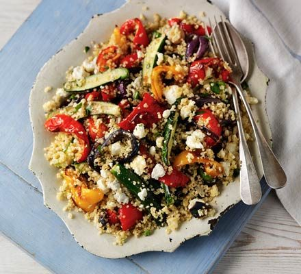

Quinoa Salad with Roasted Vegetables

Description
Here’s a healthy and delicious recipe for Quinoa Salad with Roasted Vegetables that’s packed with nutrients and full of flavor!
Ingredients
- 1 cup quinoa (rinsed)
- 2 cups water or vegetable broth (for cooking quinoa)
- 1 medium zucchini, diced
- 1 red bell pepper, diced
- 1 cup cherry tomatoes, halved
- 1 small red onion, sliced
- 1 tablespoon olive oil
- 1 teaspoon ground cumin
- 1 teaspoon paprika
- Salt and pepper, to taste
- 1/2 cup fresh parsley, chopped
- 1/4 cup crumbled feta cheese (optional for extra flavor)
dressing
- 2 tablespoons olive oil
- 1 tablespoon lemon juice
- 1 teaspoon Dijon mustard
- 1 clove garlic, minced
- Salt and pepper, to taste
Steps
- Cook the quinoa:
- In a medium saucepan, bring 2 cups of water (or vegetable broth) to a boil. Add the quinoa, reduce the heat to low, cover, and simmer for about 15 minutes, or until the liquid is absorbed and the quinoa is tender. Remove from heat and fluff with a fork. Set aside.
- Prepare the vegetables:
- Preheat the oven to 400°F (200°C).
- On a baking sheet, toss the zucchini, red bell pepper, cherry tomatoes, and red onion with 1 tablespoon of olive oil, cumin, paprika, salt, and pepper. Spread them in a single layer.
- Roast for about 20 minutes or until tender and slightly browned.
- Make the dressing:
- In a small bowl, whisk together 2 tablespoons of olive oil, lemon juice, Dijon mustard, minced garlic, salt, and pepper.
- Assemble the salad:
- In a large bowl, combine the cooked quinoa, roasted vegetables, and fresh parsley.
- Pour the dressing over the salad and toss gently to combine.
- Serve:
- Top with crumbled feta cheese, if using. Serve warm or chilled!
Back to main site